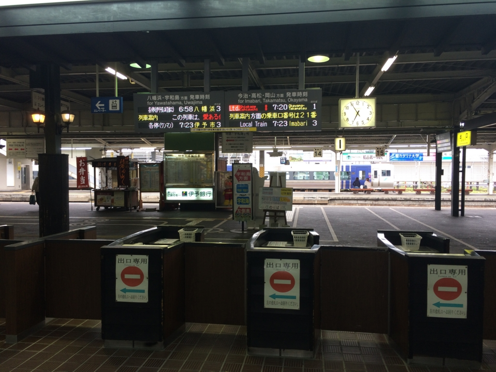
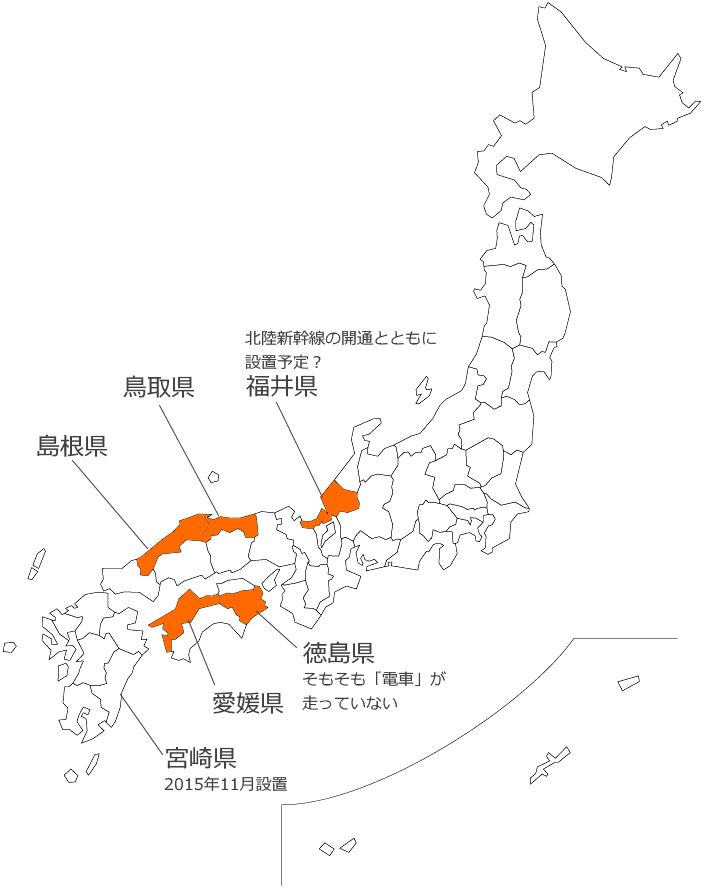
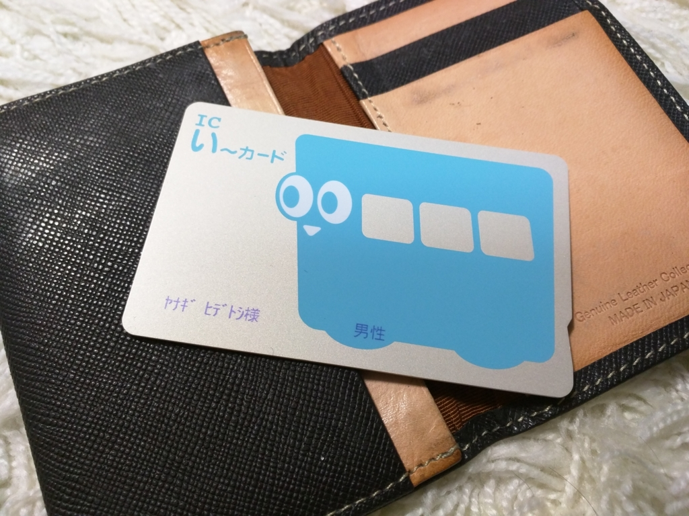
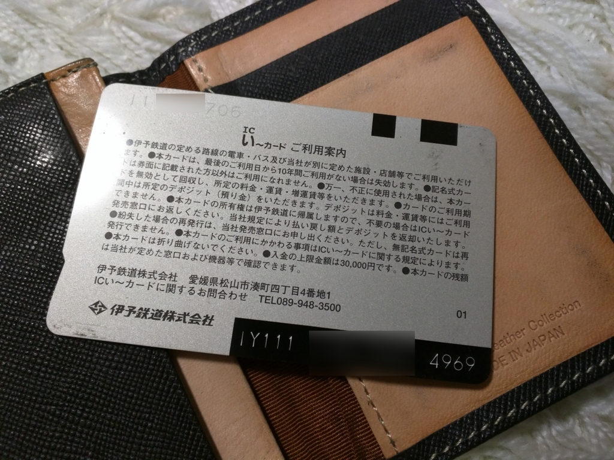
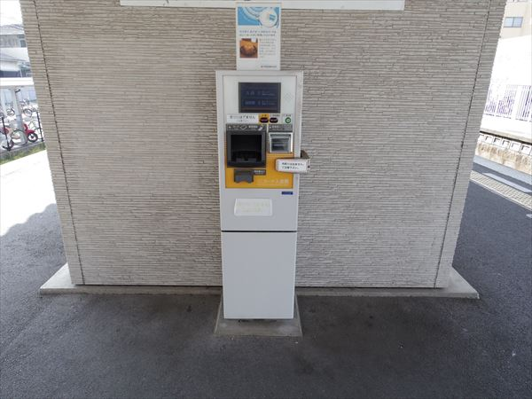
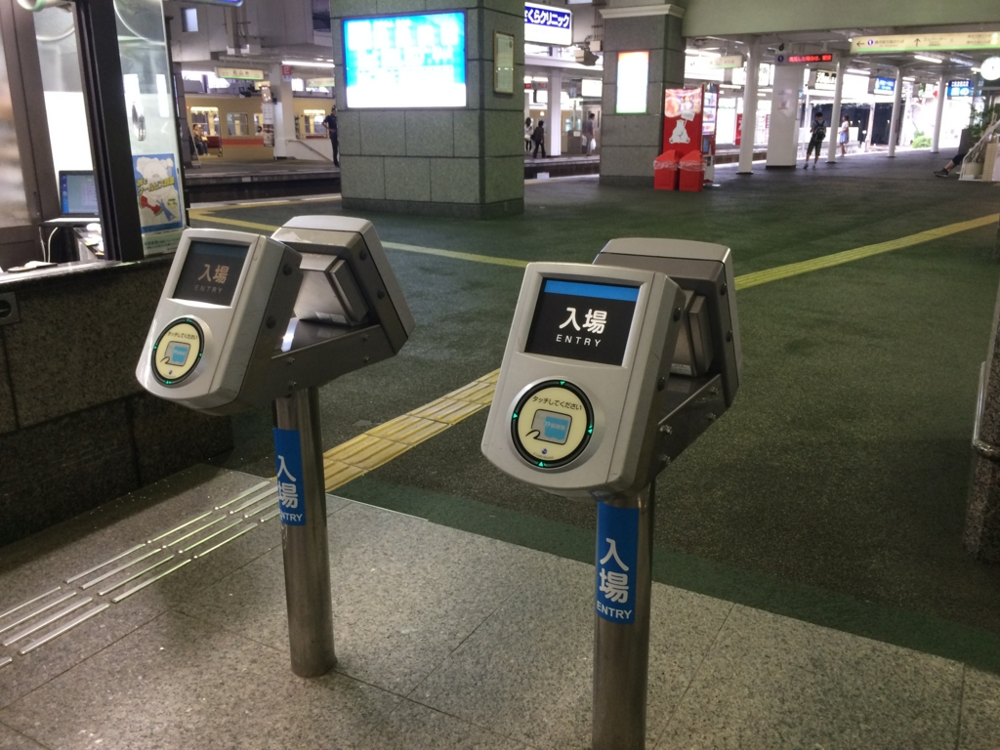
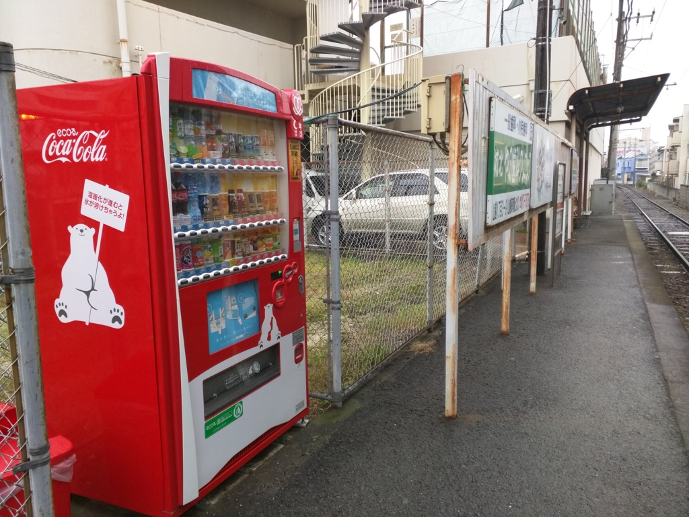
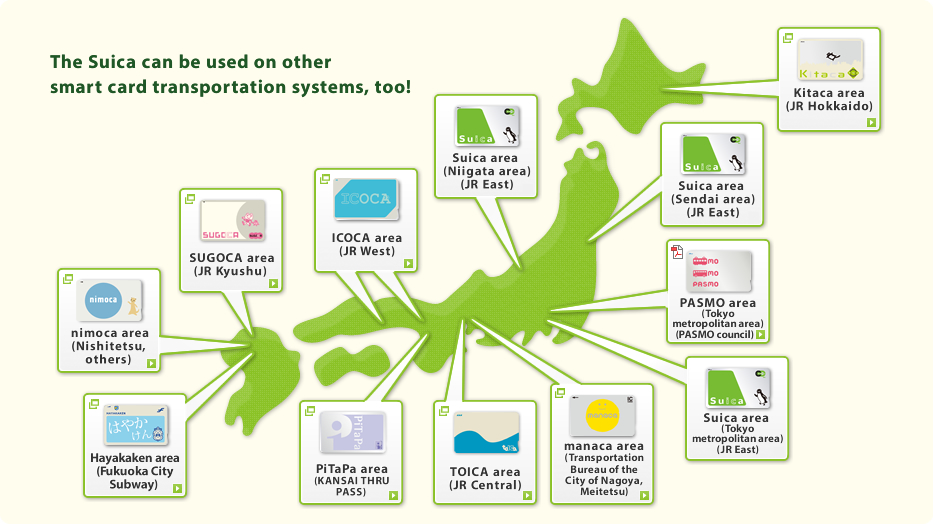

ウチの県には自動改札機がない……否！ 捨て去ったのだ！！
公開日：

この記事は「愛媛・松山についての徒然 Advent Calendar 2015 - Adventar」の10日目の記事です。前日の記事は「バイクで愛媛の先っぽまで行ってきたった。 - だるろぐ」でした。次の日の記事の担当は kkd - Adventar さんです (｀･ω･´)ゞ
実は九州で唯一、電車の自動改札機がなかった宮崎県。11月7日からついに自動改札が導入されることになり、県民が大いに沸いている。JR九州のICカード「SUGOCA」が宮崎エリアに導入されるのに合わせて、自動改札機も用意されたのだ。
これまで有人改札だった宮崎駅では、利用者が自動改札機に慣れていないことを想定し、親切にも利用方法を解説したポスターが掲示されているほど、宮崎県民にとっては未知なるテクノロジーのようだ。
最近、宮崎県に自動改札機が導入されたのだそうで。これで、自動改札機がない都道府県はたったの5つになってしまいました。このうち福井県は北陸新幹線が開通する予定なので、それに前後して自動改札機が設置されるものと思われます（うらやまけしからん）。
徳島県「宮崎県がやられたようだな…」
鳥取県「ククク…奴は自動改札機がない県・四天王の中でも最弱…」
島根県「自動改札機ごときで喜ぶとは田舎県の面汚しよ…」

本邦では自動改札の有無が文化レベルのバロメーターとして使われることがあります。その点、愛媛県も「自動改札機すらない田舎県」というレッテルを貼られても仕方がないところはあります。
――しかし、待ってほしい！！
「自動改札機はあったんだ！」
ボクが2年前、愛媛県に移住してきたときには確かに伊予鉄・松山市駅に自動改札機がありました。
本日をもって使用終了となった松山市駅地上改札の自動改札機。 pic.twitter.com/N2nMAMXlD2
— がつお@鉄 (@ga2o807) 2014年2月15日
その証拠となる古文書が、伊予鉄のホームページに今も残されています。
2014.02.04
ICい〜カードの普及に伴い、平成26年2月16日（日）より松山市駅の自動改札機の撤去工事を行います。乗車券は改札口の駅務員にご提示、またはお渡しくださいますようお願い申し上げます。
工事期間中はご迷惑をおかけ致しますが、ご理解のほどよろしくお願いいたします。
――そう。愛媛県は日本で唯一「自動改札機を捨て去った県」なのです。
自動改札機がないことは、もはや県の後進性を意味しません。“ICい〜カード”の登場で、愛媛県はむしろ自動改札機という軛から解放され、新たなるステージへと駆け上がったといってよいでしょう。
「見せてあげよう、“ICい〜カード”の雷を！！」

それでは“ICい〜カード”とはいったいなんなのでしょうか。たまたま財布に入っていたので写真に撮ってみました。
やる気のないキャラデザですが、それが一周回っていい感じです。

裏面はこんな感じ。勘のいい人にはすでにお気づきのこととは思いますが、SUICA などと同じく FeliCa を利用したものですね。あんまりその業界には詳しくないのですが、“IY”から始まるコードは“伊予鉄”を表しているのでしょう。かつては磁気カードの“ICカード”が流通していたそうですが、その後継のようです。システムは富士通製のようですね。
実は“おサイフケータイ”にも対応しているのですが（日本初）、ガラケーそのものがアレなので近々運用終了となるようです。
このたび、永らくご愛顧いただいておりました「モバイルい～カード」は、ご利用件数が減少していることから、2016年3月31日をもちまして、サービスを終了させていただくこととなりました。
技術のトレンドを読むのは難しいですな。
ちなみに、このカードは引っ越してきたときに“松山市駅いよてつチケットセンター”で発行してもらったものです。役所で住民票の手続きしたときよりも「松山市民になったなー」っていう実感がわいた瞬間でした（ぉ
あと、“ICい〜カード”には記名式と無記名式があるのですが、
- 記名式：2,000円（デポジットなし。2,000円まるごと使える）
- 無記名式：2,000円（うち500円はデポジットのため使えない）
ので、暇な人は記名式のものを作ってもらうといいです。そのほかにも、身障者用や子ども用もあるのですが、そっちは期限付きで色も異なるみたい。基本的にプリペイド（前払い式）ですが、ポストペイ（後払い方式）のクレカ一体型もあるみたいですね。無職でも作れるなら、そっちがほしいんですけど。
チャージは市内電車（ちんちん電車）でお願いすればオーケー（タイミングよくお願いするのが難しいケド）。

あと、松山市駅・古町駅・高浜駅などにチャージ機が設置してあります（さまよえるキモプア ふたたび三津駅とICい～カードのチャージ機）。どの電停にもあれはいいんですけど、まぁ、そういうわけにもいかないですよね。

使い方は、
- 市内電車：降りるときにタッチ。乗り換えるときは、タッチしたあとに乗換券をもらう
- 郊外列車：入場のときと、出場のときに駅のリーダーにタッチ
- バス：乗るときと降りるとき、それぞれに車内リーダーにタッチ
って感じです。郊外列車のリーダーは自動改札機っぽいので、もう愛媛には自動改札機があるってことでいいんじゃないかって気もします。
ちなみに、ボクはよく郊外列車でタッチするのを忘れてしまいます……自動改札機についてる、あのちんこの辺りをバターンってやってくる板があれば大丈夫な気がするんですけどねぇ。ちゃんとタッチしているか監視するおばちゃん（やお兄ちゃん）がいますが、たまに怒られます。キセルするつもりはないんや……(´；ω；`)ｳｩｩ
ほかにも“ICい〜カード”は船でも使えるのですが、そっちはまだ未経験なのでよくわかんないです。コンビニでも使えるそうなのだけど、それもちょっとわかんない。わかりやすい表示があればいいんですけど。

でも最近、最寄りの電停（本町六丁目）の自動販売機で“ICい〜カード”が使えるのを発見して、ちょっと幸せです。チャージ金額を確かめるついでにお茶を買っています。
「制服さんの悪いクセだ」

残念なのは、この“ICい〜カード”、「サイバネ規格」というのに準拠してないせいで、他の地域との相互運用の可能性がなさそうってことですね。仕方ないので、東京に行くときは SUICA をもっていっています。
まぁ、それ自体はそうそうあることでもないし、ちょっと我慢すればいいだけなので、割とどうでもいいのですが、困るのが県外から遊びに来る人たち。ボクが“ICい〜カード”でピッと電車を乗り降りするのに、友人が小銭をかき回して数を数えているのをみると、「これ、どうにかならないものかなぁ」と思います。ボクはよく“ICい〜カード”をだして、「松山市民にのみ所持を許されたカードなのだ」などと冗談を言っているのですが、正直これがよいことには思えません。
たとえば、
- 空港で無記名式のカードをお土産チックに売る
- 空港や港で借りて返せるカードレンタルサービスをやる
とか、そういう施策ができないものかなぁと思います。
とくに空港はリムジンバスでも“ICい〜カード”が使えるので、割と便利だと思うんですよね。ビジネスユースだったら領収書がでるのは経費精算のときにうれしいだろうし。「おもてなし日本一」を名乗るなら、そういうところからキッチリやってほしいデス。
今日はこの辺で終わり！